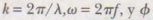
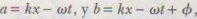
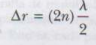
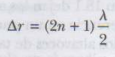

El principio de superposicion indica que cuando dos o mas ondas se mueven en el mismo medio lineal, el desplazamiento neto del medio en cualquier punto es igual a la suma algebraica de los desplazamientos por todas las ondas
Si las dos ondas viajan hacia la derecha y tienen la mismma frecuencia, longitud de onda y amplitud, pero difieren en fase, podemos expresar sus funciones de onda individuales como:
Donde, como es común,  es la constante de fase, que se introdujo en el contexto del movimiento armónico simple. Por sonsiguiente, la función de onda resultante y es:
Para simplificar esta expresión es conveniente utilizar la identidiad trigronométrica
Si establecemos , encontramos que la función de onda resultante y se reduce a:
Resultante de dos ondas senoidales viajeras
Cuando la diferencia en las longitudes de trayectoria (deltaR) es igual al valor absoluto de longitud de trayectoria 2 menos la longitud de trayectoria 1 es igual a cedo o algún múltiplo entero de la longitud de onda l, las dos ondas alcanzan al receptor en cualquier instante y esta en fase e interfieren constructivamente
La diferencia de trayectoria en función del ángulo de fase teta entre dos ondas, corresponde a un ángulo de 2Pi rad:
Mediante el concepto de diferencia de trayectoria podemos expresar nuestras condiciones para la interferencia constructiva y destructiva de manera diferente
Interferencia constructiva
Interferencia destructiva
